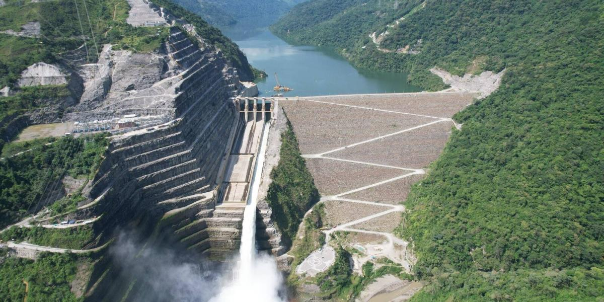

El panorama de las hidroeléctricas se ve reflejado en la historia de Colombia por el aprovechamiento de los recursos hídricos que tenemos, siendo esta el 68% del soporte de energía que entra en el país, gracias a su topografía, ha hecho que las hidroeléctricas sean fructíferos desde los años 70, fecha que a día de hoy se han construído 33 embalses en Colombia.
Con los bajos costos que genera su construcción, a comparación de una planta nuclear, además de reservar el medio ambiente alrededor de estas hidroeléctricas, son la razón por la constante creación de estos proyectos, proyectos que han mantenido en pie el desarrollo del país como alternativas a la generación de energía, Sin embargo, la hidroeléctrica de Hidroituango ha generado demasiada controversía a lo largo de los años por su deficiente administración, a consecuencia de esto, se ha desembocado gran variedad de opiniones sobre si es necesario o si fue realmente un error la construcción de esta represa.
A pesar de los desafíos presentados por proyectos como Hidroituango, es innegable que las hidroeléctricas han sido un pilar fundamental en el suministro de energía sostenible para Colombia. La capacidad de adaptarse a las condiciones naturales del país ha permitido no solo el desarrollo de infraestructura energética eficiente, sino también la oportunidad de explorar nuevas tecnologías que pueden mejorar aún más el rendimiento y la sostenibilidad de estas plantas.
Además, las hidroeléctricas han jugado un papel crucial en la mitigación del cambio climático, al reducir la dependencia de combustibles fósiles y disminuir las emisiones de gases de efecto invernadero. La integración de fuentes de energía renovable, como la solar y la eólica, junto con las hidroeléctricas, promete un futuro energético más limpio y seguro para las generaciones venideras.
